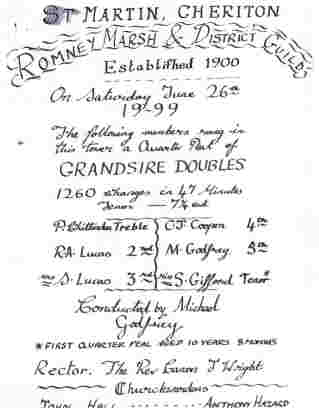
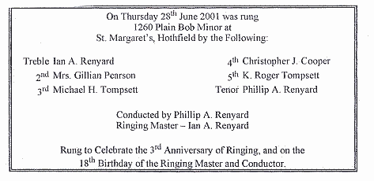
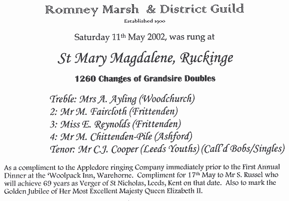

Burmarsh
Thursday
22nd June 2000
1260
Original Singles
Treble-2 C.J.
Cooper (Leeds/Burmarsh/Ashford/ Mersham)
3 N.
Evans (c) (Barnwood, Glos.)
Tenor Miss
A. Cox *[Aged 12] (Burmarsh)
*
First Quarter Peal
On the
back four. A RM&
DG Centenary Quarter Peal
Sunday
25th June 2000
1260
Original Singles
Treble P.
Chittenden (Burmarsh)
2 N.
Evans (c) (Barnwood Glos.)
3-4 C.J.
Cooper (Leeds/Burmarsh/Mersham/Ashford)
Tenor Miss
S. Gifford (Burmarsh)
On the
back four. A RM & DG Centenary Quarter Peal.
Saturday
17th February 2001
1260
Grandsire Doubles
Treble I.A.
Renyard (Ashford/Hothfield/Leeds)
-
M.
Faircloth (Hawkhurst)
-
P.A.
Renyard (c) (Ashford/Hothfield/Leeds)
-
Miss
E.M.K. Reynolds (Hawkhurst)
5-Tenor C.J.
Cooper (Leeds/Burmarsh/Mersham/Ashford)
Rung
to celebrate the installation of the new bellropes
funded
by ringers account, PCC and £500 raised by
the
junior ringers here by holding a disco in the Church hall.
Mersham
Saturday
10th March 2001
1260
Grandsire Triples
Treble Mrs
M. Osborne (Mersham)
-
Mrs
G.G. Pearson (Appledore)
-
P.A.
Renyard (Ashford/Hothfield/Leeds)
-
C.F.C.
Pearson (Appledore)
-
M.
Chittenden-Pile (Ashford)
-
K.
Osborne (Kingsnorth)
-
C.J.
Cooper (c) (Leeds/Burmarsh/Mersham/Ashford)
Tenor M.
Osborne (Mersham)
Umpire:
D.P. Smith Esq.
This
composition is the first part of Holts Original one-part peal.
Rung
to celebrate the 35th Wedding Anniversary of Mr & Mrs
M. Osborne;
Also
for the 14th birthday of Miss V. Gates-van-Dijcke a member
of the local band
Rung
in the 250th anniversary year of Mr John Holt first
calling the whole peal -
from
which this Quarter peal is extracted - at St Margaret Westminster
and on
the
101st anniversary (to the day) of the last peal at St
Paul, Shadwell. Immediately
prior
to this Quarter peal the tower was cleaned, louvre netting repaired,
and the clappers
of 3,5
and 7 tightened with the assistance of D.P. Smith Esq.
Burmarsh
Friday
13th April 2001
1440
London Surprise Minor
Treble P.
Faircloth (Portsmouth)
-
Mrs
G.G. Pearson
-
I.C.
Moore (Great Chart)
-
P.A.
Renyard
-
C.F.C.
Pearson (Appledore)
Tenor C.J.
Cooper (Leeds/Burmarsh/Mersham/Ashford)
Deeply
muffled on Good Friday.
Sunday
13th May 2001
1260
Plain Bob Minor
Treble Mrs
J. Godden (Burmarsh)
-
Mrs
G.G. Pearson (Appledore)
-
P.A.
Renyard (Ashford/Hothfield/Leeds)
-
I.A.
Renyard (Ashford/Hothfield/Leeds)
-
C.F.C.
Pearson (Appledore)
Tenor C.J.
Cooper (c) (Leeds/Burmarsh/Mersham/Ashford)
Rung
for Evensong, and in memory of E.A. Gower Esq. who
passed
away 11th May 2001 aged 90 years and 11 months.
Mersham
Saturday
18th May 2001
1280
Superlative S. Major
Treble P.A.
Renyard (Ashford/Hothfield/Leeds)
2 Mrs
G.G. Pearson (Appledore)
3 I.C.
Moore (Great Chart)
4 P.M.J.
Bradford (Sussex)
5 M.
Chittenden-Pile (Ashford)
6 K.Osborne
(Kingsnorth)
7 C.F.C.
Pearson (Appledore)
Tenor C.J.
Cooper (c) (Leeds/Burmarsh/Mersham/Ashford)
Rung
in thanksgiving for the life of E.A. Gower Esq. who departed
this
life 10th May 2001, aged 91 years and 11 months. His
inlaws were
ringers
here at one time.

Mersham
Tuesday
18th December 2001
1260
Grandsire Doubles
Treble Mrs
A. Ayling (Woodchurch)
-
Mrs
J. Young (Dover)
-
Mrs
J. Thomas (Rolvenden)
-
P.A.
Renyard (Ashford/Hothfield/Leeds)
-
C.J.
Cooper (c) (Leeds/Burmarsh/Mersham/Ashford)
Tenor I.A.
Renyard (Ashford/Hothfield/Leeds)
For
(and prior to) Carols on the Village Green, and in the Royal Oak.
Sunday
7th April 2002
1280
Plain Bob Major
Treble I.A.
Renyard (Ashford/Hothfield/Leeds)
2 Mrs
G.G. Pearson (Appledore)
3 I.C.
Moore (Great Chart)
4 C.F.C.
Pearson (Appledore)
5 M.
Chittenden-Pile (Ashford)
6 D.S.
Smith (Tenterden)
7 P.A.
Renyard (Ashford/Hothfield/Leeds)
Tenor C.J.
Cooper (c) (Leeds/Burmarsh/Mersham/Ashford)
Half
muffled in memory of H.M. The Queen Mother, with thanksgiving to
God
for her long life of 101 years and devoted service to the Empire

RINGING ARRANGED TO CELEBRATE THE GOLDEN JUBILEE OF H.M. QUEEN ELIZABETH II
Fairfield
Saturday
25th May 2002
1260
Original Singles
Treble-2 C.J.
Cooper (c) (Leeds/Burmarsh/Mersham/Ashford)
Tenor S.J.O.
Head (Woughton-on-the-Green)
New Romney
Tuesday
4th June 2002
1260
Grandsire Doubles
Treble Mrs
E. Nicholson (New Romney)
-
P.A.
Renyard (Ashford/Hothfield/Leeds)
-
S.J.O.
Head (Woughton, Milton Keynes)
-
A.
Stone (Ashford/Appledore)
-
C.J.
Cooper (c) (Leeds/Burmarsh/Mersham/Ashford)
Tenor I.A.
Renyard (Ashford/Hothfield/Leeds)
Rung
to celebrate the Golden Jubilee of H.M. Queen Elizabeth II.
Burmarsh
Sunday
7th July 2002
1260
Grandsire Doubles
Treble S.J.O.
Head (Woughton, Milton Keynes)
-
P.
Faircloth (Portsmouth)
-
Miss
E.M.K. Reynolds (Hawkhurst)
-
M.
Faircloth (Hawkhurst)
5-Tenor C.J.
Cooper (c) (Leeds/Burmarsh/Mersham/Ashford)
Rung
to celebrate the Golden Jubilee of H.M. Queen Elizabeth II
and a
retirement compliment to D.H.G., one of the local band here.
--------------------------------o0o------------------------------
Mersham
Sunday
3rd November 2002
1260
Grandsire Triples
Treble Mrs
M. Osborne (Mersham)
-
Mrs
G.G. Pearson (Appledore)
-
A.R.
Stone (Appledore)
-
C.F.C.
Pearson (Appledore)
-
O.C.R.
Webster (Rolvenden)
-
P.A.
Renyard (Ashford/Hothfield/Leeds)
-
C.J.
Cooper (c) (Leeds/Burmarsh/Mersham/Ashford)
Tenor S.
Head (Woughton-on-the Green)
For
the 397th Anniversary of the deliverance of King James I
and the three Estates of England
from
the most traiterous and bloody-intented massacre by Gunpowder
of
Guido Fawkes and his comrades. Rung prior to Evensong (BCP) and
during several
firework
displays occurring in the village. Also as 60th birthday
compliments to
M.Osborne
Esq. (Tower Captain) [5th November], Rev. J. Tipping
(Rector)
[12th
November] and the conductor of this Quarter peal, [24 on 12th
November].
Also
‘get well’ compliment to T. Cullingworth Esq. senior member of
the Guild,
currently
in Maidstone Hospital.
Fairfield
Saturday
7th December 2002
1260
Original Singles
Treble-2C.J.
Cooper (Leeds/Burmarsh/Mersham/Ashford)
Tenor S.J.O.
Head (c) (Woughton-on-the- Green)
Rung
by gas-lamp in the early evening to congratulate C.F.C. Pearson
on his
appointment as Appledore Tower Captain
Burmarsh
Sunday
8th December 2002
1260
Grandsire Doubles
Treble-2C.J.
Cooper (Leeds/Burmarsh/Mersham/Ashford)
-
Mrs
J. Godden (Burmarsh)
-
O.C.R.
Webster (Rolvenden)
Tenor S.J.O.
Head (c) (Woughton-on-the-Green)
Prior
to the parish Nativity play, and Carol Service, and to
Congratulate
C.F.C. Pearson on his appointment as Appledore
Tower
Captain.
Monday
24th February 2003
1260
Grandsire Doubles
Treble-2C.J.
Cooper (c) (Leeds/Burmarsh/Mersham/Ashford)
3 S.J.O.
Head (Woughton-on-the Green)
4
C.M. Trafford (Bobbing)
Tenor P.A.
Renyard (Ashford/Hothfield/Leeds)
Rung
to celebrate the forthcoming 80th birthday on 2nd
March of E. ‘Ted’ Greene Esq.,
Landlord
of the ‘Shepherd & Crook’ Inn (behind the Church); to welcome
R.T. Hill Esq.
back
to the Valuation Office in Folkestone after a period of illness and
88th birthday
compliment
to S.J. Russell Esq. (Verger of Leeds Church) today, and 90th
birthday
compliment
to T. Cullingworth Esq. on 3rd March (member of RM &
DG since the 1930’s)
Saturday
5th April 2003
1260
Singles – 105 extents Original; 105 extents Reverse Original.
Treble S.J.O.
Head (c) (Woughton-on-the Green)
2-3
C.J. Cooper (Leeds/Burmarsh/Mersham/Ashford)
Tenor *M.C.R.
Wood (Burmarsh)
*
First Quarter Peal.
Rung
on the back 4 as a birthday compliment to Mrs Mary Morris
a
faithful worshipper here for many years.
Rolvenden
15th August 2003
1260 Grandsire Doubles
Treble A. Sawkins (Rolvenden)
2 Miss S. Fletcher (Guildford)
3 F. Wenham (Stone)
4 C.J. Cooper (Leeds/Mersham/Ashford)
5 P.M.J. Bradford (Sussex)
Tenor Rev. L.J. Hammond (Appledore)
Rung deeply muffled (according to local custom) in the evening
following the funeral this day of Cmdr. Richard Jenks, a Rolvenden Ringer for
many years.
Marden
Sunday 16th November 2003
1260 Grandsire Doubles
Treble C.J. Cooper (Leeds, Ashford, Mersham)
2 " "
3 W. J. Stungo (Aylesbury)
4 Miss J. Faircloth (Hawkhurst)
5 S. J.O. Head (Woughton, Milton Keynes)
Tenor J. Pert (Marden)
Rung immediately following the last Divine Service of Rev. John Bourne
(Vicar since 1994) to mark his retirement this day.
{kind=link}